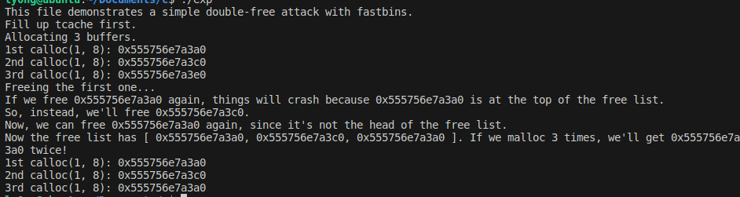

最近刚好一个项目涉及到了double free漏洞，于是有了本篇学习记录。
介绍
double free（双重释放）是一个经典的利用堆的漏洞，指释放同一块内存区域两次，那么当再次申请内存的时候，可以通过修改chunk的fd指针来达到获取任意地址写的目的。下面通过两个测试来说明。
测试环境
首先是一个简单的测试，使用的是Ubuntu 20.04版本，glibc版本为2.31
测试一
测试代码：
1 |
|
一开始是跟着b站上的一个视频来学习的，但视频中使用的是2.23版本的glibc，而在2.26 版本中引入了一种新的堆管理机制Tcachebin，所以前面需要先把Tcachebin给用malloc和free占满，然后使用calloc来申请新的内存。
输出结果：

在申请3个chunk：A，B，C之后
按照 A、B、A 的顺序释放时，会发生以下情况：
- 释放 A：当释放 A 时，它被放入 fastbin 的的链表头部。
- 释放 B：释放 B 时，B 也被放入 fastbin 的链表中，但由于是后释放的，它被放在 A 的后面。
- 释放 A（再次释放）：由于 fastbin 是 LIFO（先进后出） 的，再次释放 A 时，它不会被放入链表的头部，而是覆盖了之前释放的 A 节点。因此，链表中 A 的指针现在指向了 B。
现在，fastbin 的 链表看起来是这样的：
1 | 0x555756e7a390 —▸ 0x555756e7a3b0 ◂— 0x555756e7a390 |
测试二
尝试获取已存在变量的地址并修改变量值。
测试代码：
1 |
|
运行结果:
解析:
在64位机器上，unsigned long 占8字节，所以&t比&stack_var高了8字节
在*d = (unsigned long)(((char*)&stack_var)-8);处打一个断点，未执行前
fastbin:

对应的chunk
而d是一个指针变量，指向0x555555559380
在执行结束后对应的chunk：
可以明显看到fd变成了0x7fffffffdec0那么此时的fastbin为：
而0x7fffffffdec0是链表的头部地址，在经过两次calloc后就可以拿到的地址是0x7fffffffded0，也就是变量t的地址。
通过这种方式就可以拿到变量t的地址，并对t进行修改，同时glibc版本不同，会对指针覆盖进行限制（例如加密之类的），所以要根据具体的版本去修改利用代码。
参考：